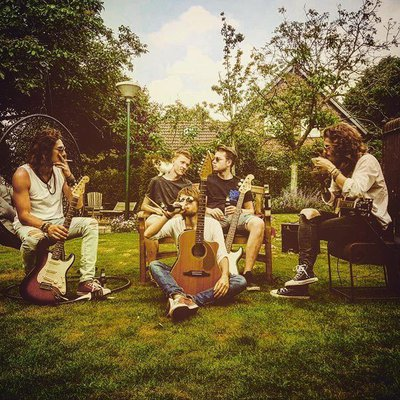
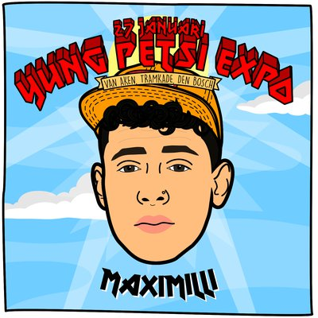
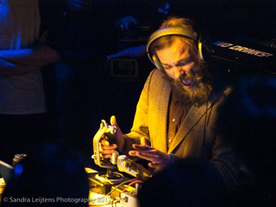
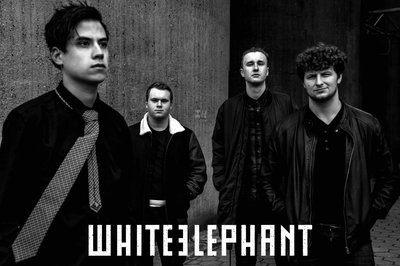

woensdag
14:00-17:00
NJAO
Een afvaardiging van de leukste en meest enthousiaste jeugd van Nederland die accordeon speelt, zal ons aan de lange tafel in de Spiegelzaal hun wereldse kost serveren terwijl we in de rij staan voor de kassa. Het repertoire is zéér veelzijdig, van klassiek tot pop, van film muziek tot Argentijnse tango. Het orkest won vele internationale prijzen in haar reeds 20-jarig bestaan en bewijst dat het accordeon verre van oubollig is.
vrijdag
15:30-16:15
Eerie Wanda
Eerie Wanda is het geesteskind van singer/songwriter Marina Tadic. Haar demo’s kwamen terecht bij Jasper Verhulst (voorheen in Lola Kite en Moss, nu in de band van Jacco Gardner). Hij was onder de indruk en moedigde haar aan een band te beginnen: Eerie Wanda was een feit. Begin 2016 zag het debuutalbum ‘Hum’ het licht, dat door Rolling Stone Magazine meteen tot één van de de beste popplaten van 2016 werd gebombardeerd.
vrijdag
17:00-18:00
De Likt
De Likt uit Rotterdam is een echte live-sensatie. Met hun brute electrorap slingeren ze de ene na de andere beuker de zaal in, of hun frontman zelf, want die houdt nogal van sky-diven. In een ouderwetse bolletjesjurk ramt hij de nummers erin, maar al gauw gaat die uit, want het wordt te heet onder die jurk. In een rood onderbroekje kun je trouwens veel beter van hot naar her springen. Het is net alsof er GoGo Gadnet-veren onder zijn schoenen zitten. Denk aan De Jeugd van Tegenwoordig maar dan maniakaal, heerlijk Rotterdams! Zonder twijfel gaat De Likt met botte tanden de Willem in Twee breken...


vrijdag
18:00-18:15
Blauwe Uil
YUNG PETSI EXPOSITIE üç∑ Een expositie, maar niet zo maar een. Niet zo maar een normale expo, nee deze is helemaal anders. Precies. Precies zoals je van Yung Petsi gewend bent. Je weet het nooit niet totdat je het meemaakt/ziet. Zo ook 27 januari met o.a. Blauwe Uil van Rotterdam Airlines.
vrijdag
18:00-19:00
Nordmann
Nordmann toont de elektrische live intensiteit en het explosieve potentieel van een furieuze rock and rollband, en houdt ondertussen ook de bedachtzame en evoluerende kwaliteiten van de beste improviserende acts vast. De band uit Gent heeft net The Boiling Ground afgeleverd, een album dat leest als free jazz, Kraut, experimenteel, avant-garde en psychrock. Het is een geluid dat tot de verbeelding spreekt en suggestief is, zowel zinderend als bevredigend. Het is de zalvende drug en onmiddellijke kick voor mensen die snakken naar avontuur.

vrijdag
19:00-19:45
Omiri
Maak kennis met één van de meest frisse en originele nieuwe acts uit de muzikale onderbuik van Lissabon. Een bevreemdende, opzwepende one-man show op ukelele, bouzouki, mandoline, nyckelharpa en Portugese doedelzak. In de rug gedekt door knotsgekke visuals van bewerkte Portugese oude besjes en allerlei volksmuzikanten die haperende electro beats vormen en daarmee een brede lach op je gezicht toveren.

vrijdag
19:30-20:30
Animal Road
Animal Road is een band met haar roots in de omgeving van Den Bosch. Deze band, bestaande uit een vijftal pilshunters voorziet de avond van een mooi gevarieerd programma. Het beste samen te vatten als poprock met een rauw randje. Met hun zomerse vibes, harmonieuze samenzang, stevig gitaarwerk en up-tempo nummers maakt Animal Road samen met het publiek van ieder optreden een feest. Met het speciaalbier van de Bossche Brouwers moet dus helemaal goed komen ;-)

vrijdag
19:30-19:45
MaxiMilli
YUNG PETSI EXPOSITIE üç∑ Een expositie, maar niet zo maar een. Niet zo maar een normale expo, nee deze is helemaal anders. Precies. Precies zoals je van Yung Petsi gewend bent. Je weet het nooit niet totdat je het meemaakt/ziet. Zo ook 27 januari. MaxiMilli onderdeel van, ADF met o.a. Ronnie Flex, jaja. Deze held is aanwezig!
vrijdag
19:45-20:30
The Shady Greys
The Shady Greys is een Amsterdams duo dat vuige lo-fi blues-garage maakt, enkel gebruik makend van een cajón en voetpercussie (geen drums), bijgestaan door ruige gitaar riffs, razende vocalen en hoge dosis energie. Maatschappelijke onvrede en eenvoud zijn zowel in de studio als op het podium de norm.
vrijdag
20:00-21:00
KAUW
Deze boys uit Amsterdam maken stampende 'life music house': stampende dance muziek op analoge instrumenten! Met invloeden van het gehele muzikale spectrum en eeuwig groovende beats, is Kauw klaar voor het nachtleven. Met toetsen, bas en drums verbinden deze drie muzikanten sterke harmonieën met spacende melodieën. Juist nu de dansvloer gedomineerd wordt door DJ's zoekt Kauw naar nieuwe sounds en manieren om de analoge elektronische muziek in de clubs te krijgen! Daar werken wij natuurlijk graag aan mee :-)

vrijdag
20:30-23:15
PAPAJAHKUR
Papajahkur speelt tijdens de eerste editie van RAUWKOST Festival 2018 en heeft achtergronden in allerlei verschillende genres muziek wat zorgt voor een muzikale explosie met reggae muziek als fundering. Met roots in de rock muziek heeft Papajahkur veel ervaring met energieke live shows. Deze groep uit Den Bosch zit vol positieve energie en zorgt voor een flinke dosis 'Good vibes only!'.


vrijdag
20:40-21:25
Take No Prisoners
TAKE NO PRISONERS heeft in korte tijd een grote indruk achtergelaten bij de fans! De muziek van dit vijftal kan het best beschreven worden als melodische hardcore, met invloeden uit zowel Emo als Youth Crew Hardcore. Ieder optreden vlamt en de aandacht wordt constant opgeëist.

vrijdag
21:00-22:00
TokTek
TokTek maakt ter plekke rauwe composities van loops uit andere concerten, geluiden van speelgoed, zelfgebouwde synthesizers en joysticks! Alles wordt door hem live gesampeld, verdraaid en weer terug gesmeten om zo een structuur te creëren waarin het verwachtingspatroon geen kans krijgt. Hij geeft zijn publiek telkens opnieuw het 'you ain't seen nothing yet' gevoel.


vrijdag
22:00-23:00
Slumberland
Het project Slumberland van muzikant en filmmaker Jochem Baelus  laat zien dat muziek ook op een andere manier gemaakt kan worden. Hij bouwde hiervoor zijn eigen instrument: een gigantisch apparaat dat hij live bedient, gemaakt van haardrogers, vervormde breinaalden, blaasbalgen, potten en pannen, oude super 8 projectoren en naaimachines. Dat alles bespeelt hij in combinatie met zijn eigen zang en rauwe gitaarspel, in combinatie met elektronica en twee live drummers! Als dat geen rauwe kost is...
vrijdag
22:15-23:15
Altin Gün
Altın Gün laat zich inspireren door het Turkse geluid uit de jaren ’70. De tijd dat artiesten zoals Selda Bağcan, Barış Manço en Erkin Koray traditionele muziek samensmolten met Westerse rockinvloeden. Bandleden van Jacco Gardner en Jungle By Night waren zo gefascineerd door dit geluid, dat ze op zoek gingen naar Turkse muzikanten. Daar kwamen Merve Dasdemir en Erdinc Yildiz Ecevit om de hoek kijken. Ze spelen liedjes van de eerder genoemde kunstenaars uit de jaren ’70, maar ook minder bekende tijdgenoten. Daarnaast maken ze hun eigen versies van traditionele Turkse muziek. Zo komen verschillende werelden samen tot een verfrissend en dansbaar geluid!

vrijdag
00:00-01:00
Dr. Meaker
In Nederland zijn er maar weinig tot geen live drum 'n bass bands te vinden. Daarvoor zijn we dus maar gaan rondneuzen in dé DnB stad van Europa: Bristol. Al gauw stuitten we daar op Dr. Meaker. Deze band is daar rete hot, wordt wekelijks gedraaid op radio 1 van de BBC en won zelfs een prijs voor Urban Music. Verwacht stampende beats met soulvolle zangeressen en koperblazers. Tijdens RAUWKOST maken ze hun debuut in Nederland met maar één boodschap: live drum 'n bass is cool!
vrijdag
01:00-02:00
Jo Goes Hunting
Jo Goes Hunting is het geesteskind van Jimmi Jo Hueting, een bijzonder getalenteerde jonge muzikant wiens achtergrond zich uitstrekt over genres en invloeden, resulterend in een rijk geluid dat een breed palet aan instrumenten, melodieën en beats toont. De diepte en het perspectief creëren een dynamische atmosfeer die zowel warm als rauw is.
vrijdag
02:00-03:00